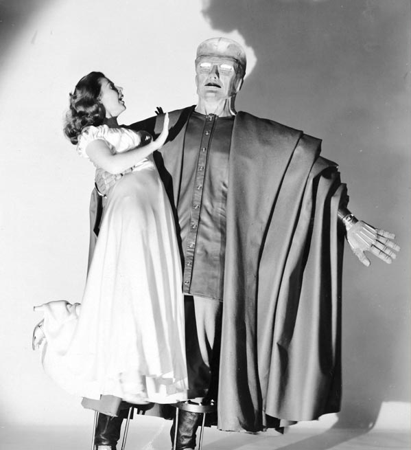
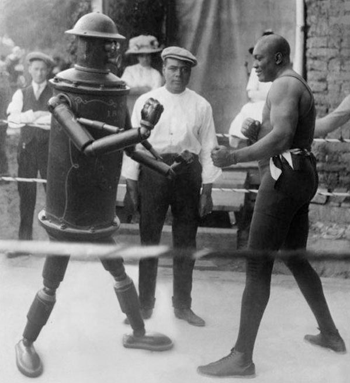
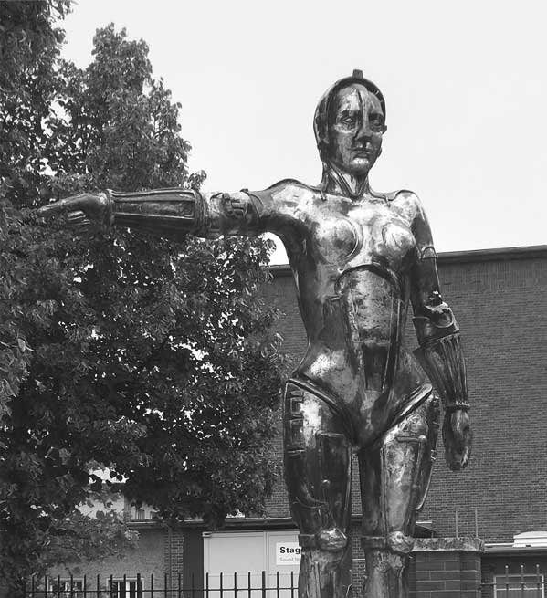
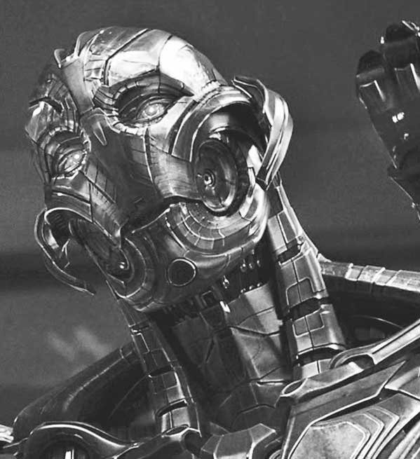
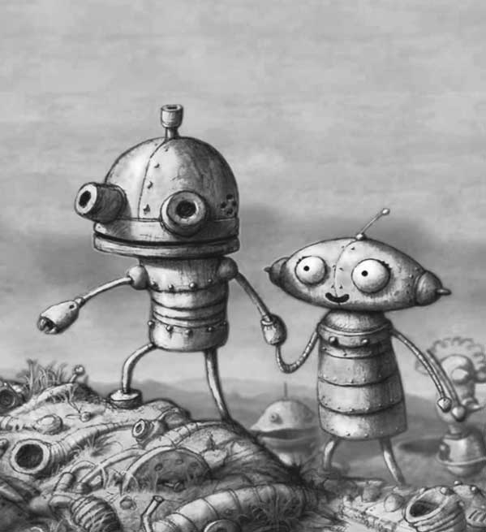
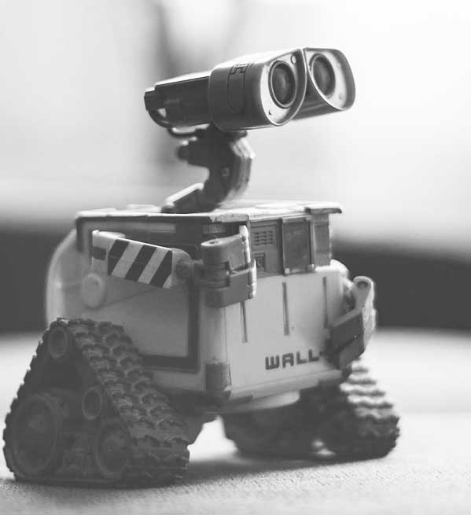
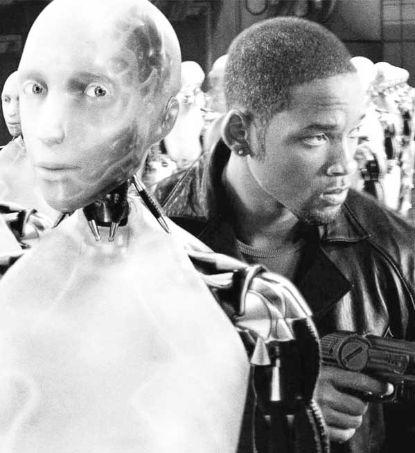
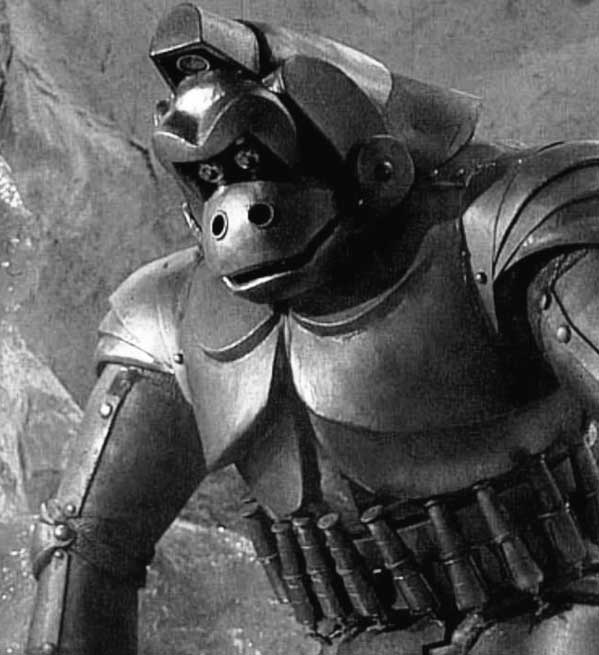

<DOCTYPE! html>
<html>
<head>
	<title>cool links | human after all | robots and movies</title>
	<meta charset="utf-8">
	<link rel="stylesheet" href="https://fonts.googleapis.com/css?family=Roboto">
	<link rel="stylesheet" type="text/css" href="css/estilos.css">
	<meta name="viewport" content="width=device-width, initial-scale=1">
</head>
<body>
	<header>
		<div id="logo_top">
		<a class="nav_logo" href="index.html"></a> 
		</div>
		<nav id="nav_top">
			<ul>
				<li><a class="nav_link" href="index.html#robots">robots</a></li>
				<li><a class="nav_link" href="history.html">history</a></li>
				<li><a class="nav_link" href="project.html">project</a></li>
				<li><a class="nav_link nav_visiting" href="links.html">links</a></li>
				<li><a class="nav_link" href="contact.html">contact</a></li>
			</ul>
		</nav>
	</header>
	<section class="section_body_short section_body_xlong_mobile">
		<div class="section_box purple_box">
		<h1>cool links</h1>
		</div>
	<article>
		<div class="flex_box_links">
			<div class="flex_box_links_item">
			
			<a href="https://www.pastemagazine.com/articles/2015/11/the-100-greatest-movie-robots-of-all-time.html" target="_blank"></a>
			</div>
			<div class="flex_box_links_item"><a href="https://www.businessinsider.com/15-incredible-pieces-of-art-created-by-robots-2016-2" target="_blank"></a>
			</div>
			<div><a href="https://www.thomasnet.com/articles/automation-electronics/history-of-robotics/" target="_blank"></a>
			</div>
			<div><a href="https://www.filmsite.org/robotsinfilm.html" target="_blank"></a></div>
			<div><a href="https://www.youtube.com/watch?v=GlvopMebo_k" target="_blank"></a></div>
			<div><a href="https://tinybop.com/blog/loves-robots-robots-more-robots" target="_blank"></a></div>
			<div><a href="https://mentalitch.com/the-best-robot-movie-characters-of-all-time/" target="_blank"></a></div>
			<div><a href="https://www.analyticsinsight.net/top-15-ai-robotics-movies-showcasing-future-ahead/" target="_blank"></a></div>
			<div><a href="https://www.gamespot.com/gallery/the-22-best-gigantic-robots-from-movies-tv-and-vid/2900-1839/" target="_blank"></a></div>
		</div>


	</article>
	</section>
	<footer>(c) 2020. human after all &#9829;
	</footer>
</body>
</html>